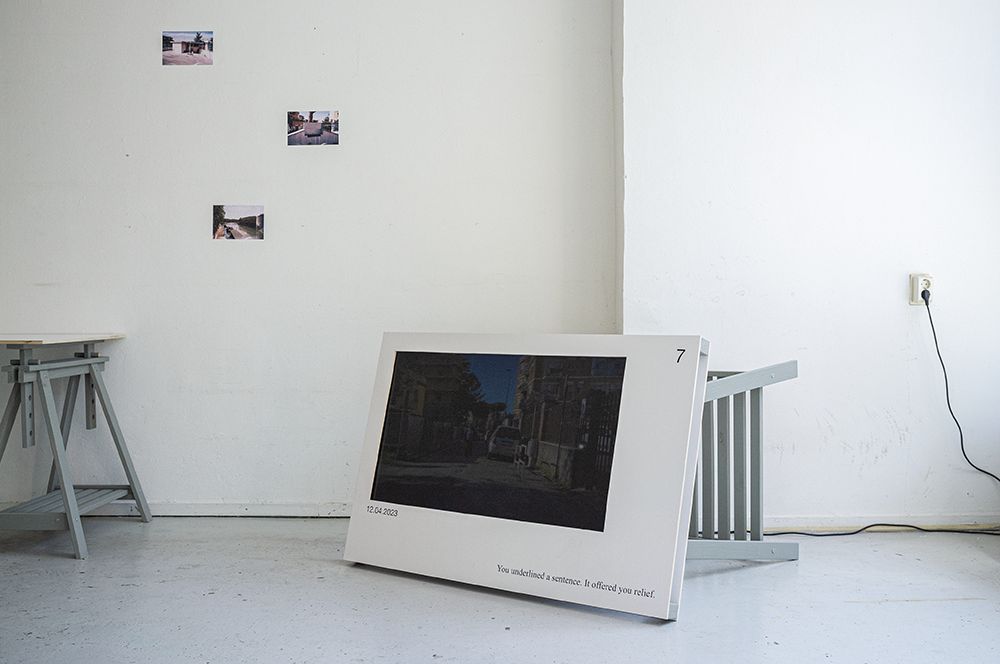
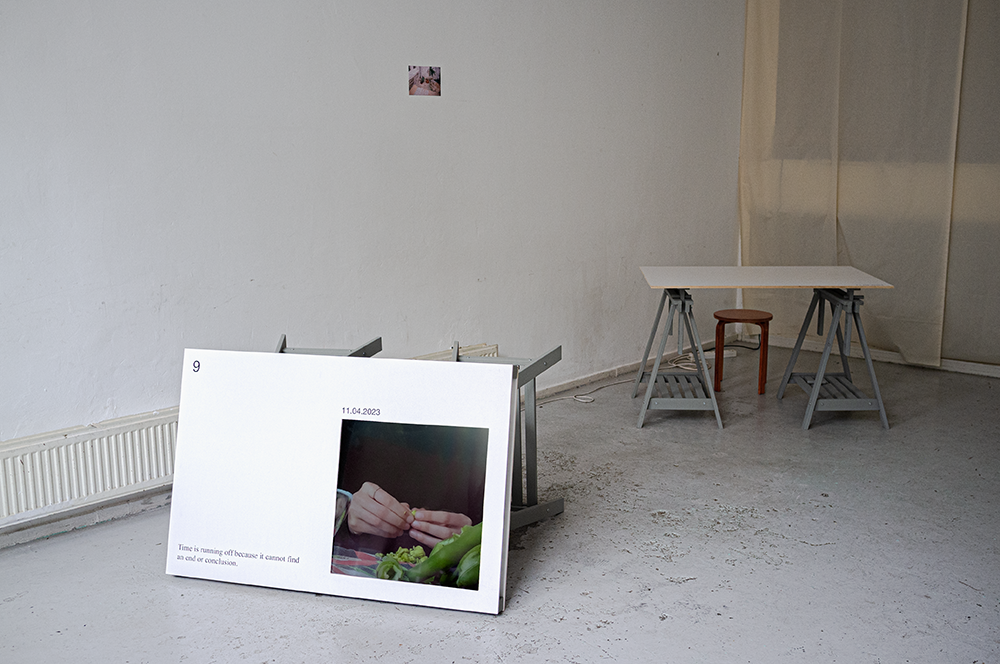
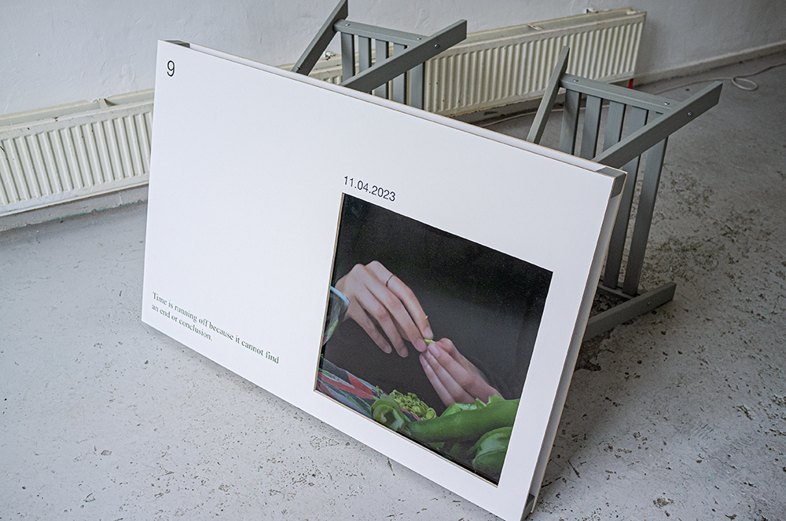
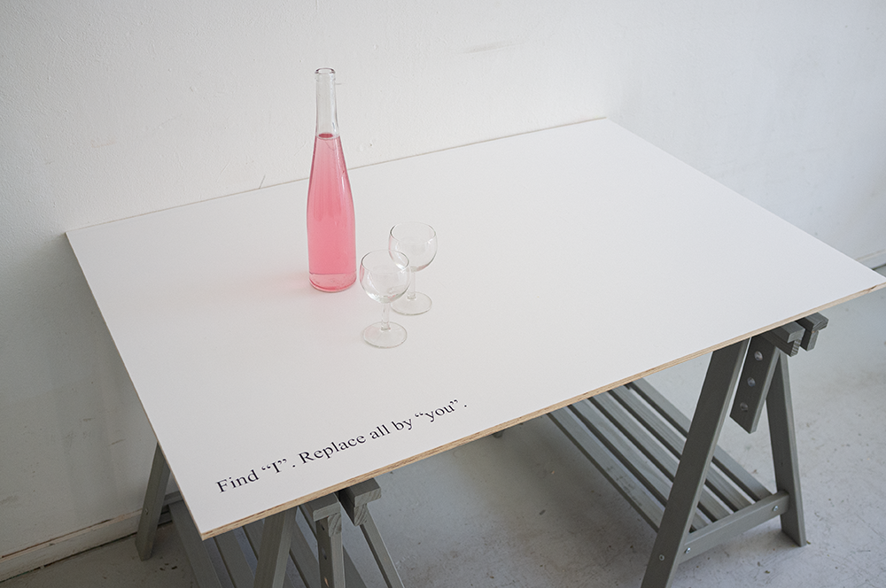
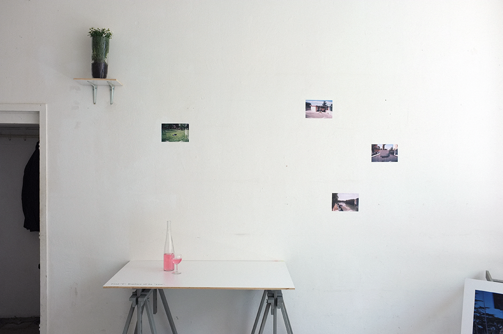
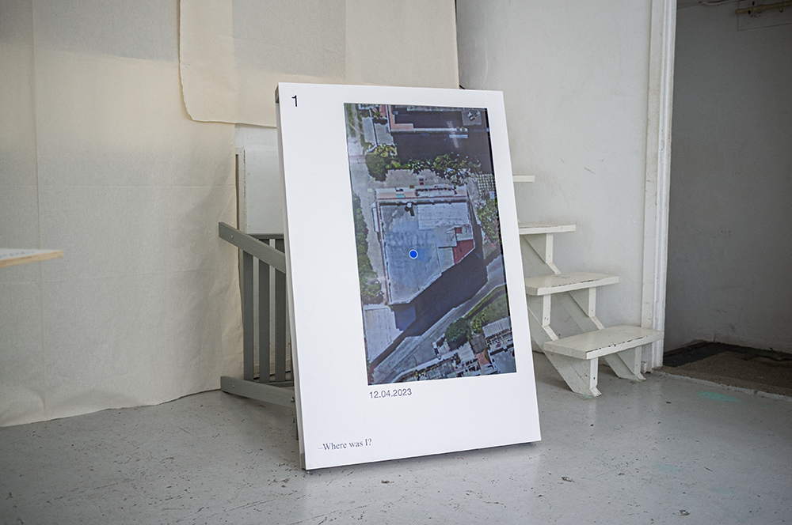

Where was I?
Scenography and production for Kirsten Spruit's performative reading and installation "Where was I?"" part of their research project "How To Save Time" which circles around a longstanding fascination with temporality, documentation and validation. Amidst a pervasive feeling of dischronicity.The scenography re-configures the physical desktop, a stereotypical space of modern ‘work' as a series of screen displays for Spruit's video works.
Sceneography and Production
for Kirsten Spruit





